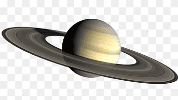

Saturno é o sexto planeta do sistema solar e é conhecido por seus impressionantes anéis, que são compostos principalmente de partículas de gelo e poeira. Com uma atmosfera predominantemente formada por hidrogênio e hélio, Saturno exibe padrões atmosféricos, incluindo tempestades e nuvens. Suas características mais marcantes, no entanto, são os anéis deslumbrantes, que consistem em diversos anéis concêntricos que circundam o planeta. A exploração espacial, especialmente através de missões como a Cassini, tem proporcionado insights valiosos sobre esse fascinante gigante gasoso.